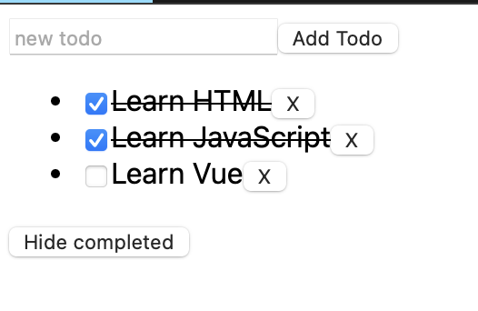

Vue¶
.vue 后缀的文件中。安裝工具
$ npm install -g @vue/cli # 全局安装
$ vue --version
@vue/cli 5.0.8
$ vue create vue_demo # 不支持大写
# 初始化项目
$ cd vue_demo
$ npm run serve # 运行服务
项目配置 & *.vue`¶
vue_demo
├── public
├── src # !!! 源码文件
│ ├── assets # 存放静态资源
│ │ ├── .css
│ │ └── .png
│ ├── components # 公共组件
│ │ └── .vue
│ ├── App.vue # 主入口的组件
│ └── main.js # 程式入口
├── ... # 不重要
├── package.json
└── package-lock.json
每一个 *.vue 文件都由三种顶层语言块构成：<template>、<script> 和 <style>，以及一些其他的自定义块
package management package.json¶
npm 是前端开发人员广泛使用的包管理工具，项目中通过 package.json 来管理项目中所依赖的 npm 包的配置。
Ref
模版语法¶
指令是由 v- 开头的一种特殊 attribute。
Single-File Component 的意义
*.vue 是单文件组件，一个 vue 文档就是一个组件。
this来访问组件实例。组件实例会暴露data中声明的数据属性。我们可以通过改变这些属性的值来更新组件状态。
export default{
data(){
// 该组件暴露的数据
},
method:{
// 该组件暴露的函数
},
computed:{
// 计算属性。
// 使用 computed 选项声明一个响应式的属性，它的值由其他属性计算而来：
},
components:{
// 注册组件
},
props:{
// 暴露给父组件的
// 接受父组件的数据
},
emits:[
// 暴露给父组件
// 发给父组件的数据
]
}
js & html & css 绑定数据¶
配合 js 的 data()
{{content}}文本<.. v-html="content"></..>富 html<.. v-bind:attri="attri_v"></..>&<.. :attri="attri_v"></..>属性
// 传内容
<div>Header:: {{ header }}</div> // raw 文本形式
<div v-html="header"></div> // html 编译
// 传代码
<div v-bind:id="dynamicId"></div> // 以 动态传属性 id 为例
<div :id="dynamicId"></div> // 可简写忽略 v-bind
<h1 :class="red">Make me red</h1> // 绑定 js传过来的格式 来改颜色
解析js 表达式
会在当前活动实例的数据作用域下作为 javascript 被解析。但是每个绑定只能包含 单个表达式
事件监听¶
v-on:event="func" & 简写 @event="func" 指令监听 DOM 事件
HTML DOM 事件 允许 JavaScript 在 HTML 文档中的元素上注册不同的事件处理程序。事件通常与函数结合使用，在事件发生之前函数不会被执行（例如当用户单击按钮时）。
常见：
click单击
Example：点击按钮会+1
export default{
data(){
return{
count:0
}
},
methods: {
increment(){
this.count++; // 访问该组件 data 里的 count
console.log(this.count)
}
}
}
表单绑定¶
<input v-model="绑定的值">v-model 会将被绑定的值与 <input> 的值自动同步，这样我们就不必再使用事件处理函数了。Example: 输入框
export default{
data(){
return{
input:"Type in"
}
}
}
条件渲染¶
v-if="condition"&v-else&v-else-ifv-show="condition"
Example: 按钮修改条件真假，然后条件渲染
export default{
data(){
return{
condition:true
}
},
methods:{
change(){
this.condition = !this.condition
}
}
}
列表渲染¶
<li v-for="item in items" :key="item.id">
{{item.text}}
</li>``
Example: Todo list
array.push(item) & array.filter(func)
let id = 0 // 初始化唯一索引
export default {
data() {
return {
newTodo: '',
hideCompleted: false, // 决定是否展示全部
todos: [
{ id: id++, text: 'todo', done: false }]
}
},
methods: {
addTodo() {
this.todos.push({
id: id++,
text: this.newTodo,
done: false });
this.newTodo = '';
},
removeTodo(todo) {
this.todos = this.todos.filter((t) => t !== todo);
}
},
computed: {
filteredTodos() {
return // 如果是hide那就是filter出来 否则就是原本
this.hideCompleted ?
this.todos.filter((t) => !t.done) : this.todos
}
},
}
生命周期¶
每个 Vue 组件实例在创建时都需要经历一系列的初始化步骤，比如设置好数据侦听，编译模板，挂载实例到 DOM，以及在数据改变时更新 DOM。在此过程中，它也会运行被称为生命周期钩子的函数，让开发者有机会在特定阶段运行自己的代码。

最常用的是 mounted 、updated 和 unmounted 。
模板引用 指向模板中一个 DOM 元素的 ref。<dom ref="ref_name">
this.$refs.ref_name 暴露在 this.$refs 上。然而， 只能在组件挂载之后访问它避免用箭头函数来定义生命周期钩子，因为如果这样的话你将无法在函数中通过 this 获取组件实例。
所有生命周期钩子函数的 this 上下文都会自动指向 当前调用它的组件实例。
添加一个 mounted 钩子，然后通过 this.$refs.pElementRef 访问 <p>，并直接对其执行一些 DOM 操作。(例如修改它的 textContent)。
export default {
mounted() {
// 此时组件已经挂载。
this.$refs.pElementRef.textContent = "Mounted"
}
}
侦听器¶
watch
有些情况下，我们需要在状态变化时执行一些“副作用”
侦听器与计算属性的区别:
当 ID 改变时抓取新的数据。
export default {
data() {
return {
todoId: 1,
todoData: null
}
},
methods: {
async fetchData() {
this.todoData = null
const res = await fetch(
`https://jsonplaceholder.typicode.com/todos/${this.todoId}`
)
this.todoData = await res.json()
}
},
mounted() {this.fetchData()},
watch:{
todoId(){
this.fetchData()
}
}
}
父组件 & 子组件¶
真正的 Vue 应用往往是由嵌套组件创建的。 父组件可以在模板中渲染另一个组件作为子组件。
this.$emit() 的第一个参数是事件的名称。其他所有参数都将传递给事件监听器。
props 传递数据
export default {
props: {
msg: String
// 在props声明 而不是data
}
}
import ChildComp from './ChildComp.vue' // 导入
export default {
components: {ChildComp}, // 注册
data() {
return {
greeting: 'Hello from parent'
}
}
}
emit 触发事件
export default {
emits: ['response'],
created() { // 生命周期函数
this.$emit('response', 'hello from child')
// 发送 response
}
}
import ChildComp from './ChildComp.vue'
export default {
components: {ChildComp},
data() {
return {
childMsg: 'No child msg yet'
}
}
}